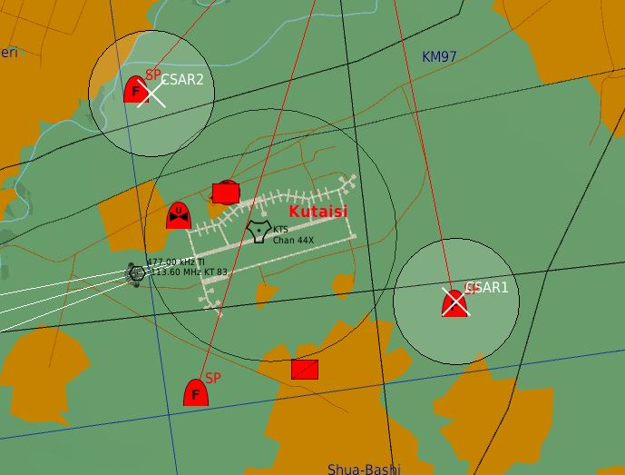

Module Tasking.Task_Cargo_Dispatcher
Tasking - Creates and manages player TASK_CARGO tasks.
The TASK_CARGO_DISPATCHER allows you to setup various tasks for let human players transport cargo as part of a task.
The cargo dispatcher will implement for you mechanisms to create cargo transportation tasks:
- As setup by the mission designer.
- Dynamically create CSAR missions (when a pilot is downed as part of a downed plane).
- Dynamically spawn new cargo and create cargo taskings!
Specific features:
- Creates a task to transport Cargo.Cargo to and between deployment zones.
- Derived from the TASK_CARGO class, which is derived from the TASK class.
- Orchestrate the task flow, so go from Planned to Assigned to Success, Failed or Cancelled.
- Co-operation tasking, so a player joins a group of players executing the same task.
A complete task menu system to allow players to:
- Join the task, abort the task.
- Mark the task location on the map.
- Provide details of the target.
- Route to the cargo.
- Route to the deploy zones.
- Load/Unload cargo.
- Board/Unboard cargo.
- Slingload cargo.
- Display the task briefing.
A complete mission menu system to allow players to:
- Join a task, abort the task.
- Display task reports.
- Display mission statistics.
- Mark the task locations on the map.
- Provide details of the targets.
- Display the mission briefing.
- Provide status updates as retrieved from the command center.
- Automatically assign a random task as part of a mission.
- Manually assign a specific task as part of a mission.
A settings system, using the settings menu:
- Tweak the duration of the display of messages.
- Switch between metric and imperial measurement system.
- Switch between coordinate formats used in messages: BR, BRA, LL DMS, LL DDM, MGRS.
- Different settings modes for A2G and A2A operations.
- Various other options.
Author: FlightControl
Contributions:
Global(s)
Global TASK_CARGO_DISPATCHER |
Implements the dynamic dispatching of cargo tasks. |
Implements the dynamic dispatching of cargo tasks.
The TASK_CARGO_DISPATCHER allows you to setup various tasks for let human players transport cargo as part of a task.
There are currently two types of tasks that can be constructed:
- A normal cargo transport task, which tasks humans to transport cargo from a location towards a deploy zone.
- A CSAR cargo transport task. CSAR tasks are automatically generated when a friendly (AI) plane is downed and the friendly pilot ejects... You as a player (the helo pilot) can go out in the battlefield, fly behind enemy lines, and rescue the pilot (back to a deploy zone).
Let's explore step by step how to setup the task cargo dispatcher.
1. Setup a mission environment.
It is easy, as it works just like any other task setup, so setup a command center and a mission.
1.1. Create a command center.
First you need to create a command center using the Tasking.CommandCenter#COMMANDCENTER.New() constructor.
local CommandCenter = COMMANDCENTER
:New( HQ, "Lima" ) -- Create the CommandCenter.
1.2. Create a mission.
Tasks work in a mission, which groups these tasks to achieve a joint mission goal. A command center can govern multiple missions. Create a new mission, using the Tasking.Mission#MISSION.New() constructor.
-- Declare the Mission for the Command Center.
local Mission = MISSION
:New( CommandCenter,
"Overlord",
"High",
"Transport the cargo.",
coalition.side.RED
)
2. Dispatch a transport cargo task.
So, now that we have a command center and a mission, we now create the transport task. We create the transport task using the TASK_CARGO_DISPATCHER.AddTransportTask() constructor.
2.1. Create the cargo in the mission.
Because a transport task will not generate the cargo itself, you'll need to create it first.
-- Here we define the "cargo set", which is a collection of cargo objects.
-- The cargo set will be the input for the cargo transportation task.
-- So a transportation object is handling a cargo set, which is automatically updated when new cargo is added/deleted.
local WorkmaterialsCargoSet = SET_CARGO:New():FilterTypes( "Workmaterials" ):FilterStart()
-- Now we add cargo into the battle scene.
local PilotGroup = GROUP:FindByName( "Engineers" )
-- CARGO_GROUP can be used to setup cargo with a GROUP object underneath.
-- We name the type of this group "Workmaterials", so that this cargo group will be included within the WorkmaterialsCargoSet.
-- Note that the name of the cargo is "Engineer Team 1".
local CargoGroup = CARGO_GROUP:New( PilotGroup, "Workmaterials", "Engineer Team 1", 500 )
What is also needed, is to have a set of Core.Groups defined that contains the clients of the players.
-- Allocate the Transport, which are the helicopters to retrieve the pilot, that can be manned by players.
-- The name of these helicopter groups containing one client begins with "Transport", as modelled within the mission editor.
local PilotGroupSet = SET_GROUP:New():FilterPrefixes( "Transport" ):FilterStart()
2.2. Setup the cargo transport task.
First, we need to create a TASK_CARGO_DISPATCHER object.
TaskDispatcher = TASK_CARGO_DISPATCHER:New( Mission, PilotGroupSet )
So, the variable TaskDispatcher will contain the object of class TASK_CARGO_DISPATCHER, which will allow you to dispatch cargo transport tasks:
- for mission
Mission. - for the group set
PilotGroupSet.
Now that we have TaskDispatcher object, we can now create the TransportTask, using the TASK_CARGO_DISPATCHER.AddTransportTask() method!
local TransportTask = TaskDispatcher:AddTransportTask(
"Transport workmaterials",
WorkmaterialsCargoSet,
"Transport the workers, engineers and the equipment near the Workplace." )
As a result of this code, the TransportTask (returned) variable will contain an object of #TASK_CARGO_TRANSPORT!
We pass to the method the title of the task, and the WorkmaterialsCargoSet, which is the set of cargo groups to be transported!
This object can also be used to setup additional things, or to control this specific task with special actions.
And you're done! As you can see, it is a bit of work, but the reward is great. And, because all this is done using program interfaces, you can build a mission with a dynamic cargo transport task mechanism yourself! Based on events happening within your mission, you can use the above methods to create new cargo, and setup a new task for cargo transportation to a group of players!
3. Dispatch CSAR tasks.
CSAR tasks can be dynamically created when a friendly pilot ejects, or can be created manually. We'll explore both options.
3.1. CSAR task dynamic creation.
Because there is an "event" in a running simulation that creates CSAR tasks, the method TASK_CARGO_DISPATCHER.StartCSARTasks() will create automatically:
- a new downed pilot at the location where the plane was shot
- declare that pilot as cargo
- creates a CSAR task automatically to retrieve that pilot
- requires deploy zones to be specified where to transport the downed pilot to, in order to complete that task.
You create a CSAR task dynamically in a very easy way:
TaskDispatcher:StartCSARTasks(
"CSAR",
{ ZONE_UNIT:New( "Hospital", STATIC:FindByName( "Hospital" ), 100 ) },
"One of our pilots has ejected. Go out to Search and Rescue our pilot!\n" ..
"Use the radio menu to let the command center assist you with the CSAR tasking."
)
The method TASK_CARGO_DISPATCHER.StopCSARTasks() will automatically stop with the creation of CSAR tasks when friendly pilots eject.
Remarks:
- the ZONE_UNIT can also be a ZONE, or a ZONE_POLYGON object, or any other ZONE_ object!
- you can declare the array of zones in another variable, or course!
3.2. CSAR task manual creation.
We create the CSAR task using the TASK_CARGO_DISPATCHER.AddCSARTask() constructor.
The method will create a new CSAR task, and will generate the pilots cargo itself, at the specified coordinate.
What is first needed, is to have a set of Core.Groups defined that contains the clients of the players.
-- Allocate the Transport, which are the helicopter to retrieve the pilot, that can be manned by players.
local GroupSet = SET_GROUP:New():FilterPrefixes( "Transport" ):FilterStart()
We need to create a TASK_CARGO_DISPATCHER object.
TaskDispatcher = TASK_CARGO_DISPATCHER:New( Mission, GroupSet )
So, the variable TaskDispatcher will contain the object of class TASK_CARGO_DISPATCHER, which will allow you to dispatch cargo CSAR tasks:
- for mission
Mission. - for the group of players (pilots) captured within the
GroupSet(those groups with a name starting with"Transport").
Now that we have a PilotsCargoSet and a GroupSet, we can now create the CSAR task manually.
-- Declare the CSAR task.
local CSARTask = TaskDispatcher:AddCSARTask(
"CSAR Task",
Coordinate,
270,
"Bring the pilot back!"
)
As a result of this code, the CSARTask (returned) variable will contain an object of #TASK_CARGO_CSAR!
We pass to the method the title of the task, and the WorkmaterialsCargoSet, which is the set of cargo groups to be transported!
This object can also be used to setup additional things, or to control this specific task with special actions.
Note that when you declare a CSAR task manually, you'll still need to specify a deployment zone!
4. Setup the deploy zone(s).
The task cargo dispatcher also foresees methods to setup the deployment zones to where the cargo needs to be transported!
There are two levels on which deployment zones can be configured:
- Default deploy zones: The TASK_CARGO_DISPATCHER object can have default deployment zones, which will apply over all tasks active in the task dispatcher.
- Task specific deploy zones: The TASK_CARGO_DISPATCHER object can have specific deployment zones which apply to a specific task only!
Note that for Task specific deployment zones, there are separate deployment zone creation methods per task type!
4.1. Setup default deploy zones.
Use the TASK_CARGO_DISPATCHER.SetDefaultDeployZone() to setup one deployment zone, and TASK_CARGO_DISPATCHER.SetDefaultDeployZones() to setup multiple default deployment zones in one call.
4.2. Setup task specific deploy zones for a transport task.
Use the TASK_CARGO_DISPATCHER.SetTransportDeployZone() to setup one deployment zone, and TASK_CARGO_DISPATCHER.SetTransportDeployZones() to setup multiple default deployment zones in one call.
4.3. Setup task specific deploy zones for a CSAR task.
Use the TASK_CARGO_DISPATCHER.SetCSARDeployZone() to setup one deployment zone, and TASK_CARGO_DISPATCHER.SetCSARDeployZones() to setup multiple default deployment zones in one call.
4.4. CSAR ejection zones.
Setup a set of zones where the pilots will only eject and a task is created for CSAR. When such a set of zones is given, any ejection outside those zones will not result in a pilot created for CSAR!
Use the TASK_CARGO_DISPATCHER.SetCSARZones() to setup the set of zones.
4.5. CSAR ejection maximum.
Setup how many pilots will eject the maximum. This to avoid an overload of CSAR tasks being created :-) The default is endless CSAR tasks.
Use the TASK_CARGO_DISPATCHER.SetMaxCSAR() to setup the maximum of pilots that will eject for CSAR.
5) Handle cargo task events.
When a player is picking up and deploying cargo using his carrier, events are generated by the dispatcher. These events can be captured and tailored with your own code.
In order to properly capture the events and avoid mistakes using the documentation, it is advised that you execute the following actions:
- Copy / Paste the code section into your script.
- Change the CLASS literal to the task object name you have in your script.
- Within the function, you can now write your own code!
- IntelliSense will recognize the type of the variables provided by the function. Note: the From, Event and To variables can be safely ignored, but you need to declare them as they are automatically provided by the event handling system of MOOSE.
You can send messages or fire off any other events within the code section. The sky is the limit!
First, we need to create a TASK_CARGO_DISPATCHER object.
TaskDispatcher = TASK_CARGO_DISPATCHER:New( Mission, PilotGroupSet )
Second, we create a new cargo transport task for the transportation of workmaterials.
TaskDispatcher:AddTransportTask(
"Transport workmaterials",
WorkmaterialsCargoSet,
"Transport the workers, engineers and the equipment near the Workplace." )
Note that we don't really need to keep the resulting task, it is kept internally also in the dispatcher.
Using the TaskDispatcher object, we can now cpature the CargoPickedUp and CargoDeployed events.
5.1) Handle the CargoPickedUp event.
Find below an example how to tailor the CargoPickedUp event, generated by the TaskDispatcher:
function TaskDispatcher:OnAfterCargoPickedUp( From, Event, To, Task, TaskPrefix, TaskUnit, Cargo )
MESSAGE:NewType( "Unit " .. TaskUnit:GetName().. " has picked up cargo for task " .. Task:GetName() .. ".", MESSAGE.Type.Information ):ToAll()
end
If you want to code your own event handler, use this code fragment to tailor the event when a player carrier has picked up a cargo object in the CarrierGroup. You can use this event handler to post messages to players, or provide status updates etc.
--- CargoPickedUp event handler OnAfter for CLASS.
-- @param #CLASS self
-- @param #string From A string that contains the "*from state name*" when the event was triggered.
-- @param #string Event A string that contains the "*event name*" when the event was triggered.
-- @param #string To A string that contains the "*to state name*" when the event was triggered.
-- @param Tasking.Task_Cargo#TASK_CARGO Task The cargo task for which the cargo has been picked up. Note that this will be a derived TAKS_CARGO object!
-- @param #string TaskPrefix The prefix of the task that was provided when the task was created.
-- @param Wrapper.Unit#UNIT TaskUnit The unit (client) of the player that has picked up the cargo.
-- @param Cargo.Cargo#CARGO Cargo The cargo object that has been picked up. Note that this can be a CARGO_GROUP, CARGO_CRATE or CARGO_SLINGLOAD object!
function CLASS:OnAfterCargoPickedUp( From, Event, To, Task, TaskPrefix, TaskUnit, Cargo )
-- Write here your own code.
end
5.2) Handle the CargoDeployed event.
Find below an example how to tailor the CargoDeployed event, generated by the TaskDispatcher:
function WorkplaceTask:OnAfterCargoDeployed( From, Event, To, Task, TaskPrefix, TaskUnit, Cargo, DeployZone )
MESSAGE:NewType( "Unit " .. TaskUnit:GetName().. " has deployed cargo at zone " .. DeployZone:GetName() .. " for task " .. Task:GetName() .. ".", MESSAGE.Type.Information ):ToAll()
Helos[ math.random(1,#Helos) ]:Spawn()
EnemyHelos[ math.random(1,#EnemyHelos) ]:Spawn()
end
If you want to code your own event handler, use this code fragment to tailor the event when a player carrier has deployed a cargo object from the CarrierGroup. You can use this event handler to post messages to players, or provide status updates etc.
--- CargoDeployed event handler OnAfter for CLASS.
-- @param #CLASS self
-- @param #string From A string that contains the "*from state name*" when the event was triggered.
-- @param #string Event A string that contains the "*event name*" when the event was triggered.
-- @param #string To A string that contains the "*to state name*" when the event was triggered.
-- @param Tasking.Task_Cargo#TASK_CARGO Task The cargo task for which the cargo has been deployed. Note that this will be a derived TAKS_CARGO object!
-- @param #string TaskPrefix The prefix of the task that was provided when the task was created.
-- @param Wrapper.Unit#UNIT TaskUnit The unit (client) of the player that has deployed the cargo.
-- @param Cargo.Cargo#CARGO Cargo The cargo object that has been deployed. Note that this can be a CARGO_GROUP, CARGO_CRATE or CARGO_SLINGLOAD object!
-- @param Core.Zone#ZONE DeployZone The zone wherein the cargo is deployed. This can be any zone type, like a ZONE, ZONE_GROUP, ZONE_AIRBASE.
function CLASS:OnAfterCargoDeployed( From, Event, To, Task, TaskPrefix, TaskUnit, Cargo, DeployZone )
-- Write here your own code.
end
Type(s)
| Fields and Methods inherited from TASK_CARGO_DISPATCHER | Description |
|---|---|
|
Add a CSAR task to retrieve a downed pilot. |
|
TASK_CARGO_DISPATCHER:AddTransportTask(TaskPrefix, SetCargo, Briefing, Silent) |
Add a Transport task to transport cargo from fixed locations to a deployment zone. |
|
Evaluates of a CSAR task needs to be started. |
|
|
Assigns tasks to the Core.Set#SET_GROUP. |
|
|
TASK_CARGO_DISPATCHER constructor. |
|
TASK_CARGO_DISPATCHER:OnAfterAssign(From, Event, To, Task, TaskUnit, PlayerName) |
OnAfter Transition Handler for Event Assign. |
|
Handle the event when a pilot ejects. |
|
TASK_CARGO_DISPATCHER:SetCSARDeployZone(CSARTaskName, CSARDeployZone) |
Define one deploy zone for the CSAR tasks. |
TASK_CARGO_DISPATCHER:SetCSARDeployZones(CSARTaskName, CSARDeployZones) |
Define the deploy zones for the CSAR tasks. |
|
Define the radius to when a CSAR task will be generated for any downed pilot within range of the nearest CSAR airbase. |
|
|
Sets the set of zones were pilots will only be spawned (eject) when the planes crash. |
|
TASK_CARGO_DISPATCHER:SetDefaultDeployZone(DefaultDeployZone) |
Define one default deploy zone for all the cargo tasks. |
TASK_CARGO_DISPATCHER:SetDefaultDeployZones(DefaultDeployZones) |
Define the deploy zones for all the cargo tasks. |
|
Sets the maximum of pilots that will be spawned (eject) when the planes crash. |
|
TASK_CARGO_DISPATCHER:SetTransportDeployZone(Task, TransportDeployZone) |
Define one deploy zone for the Transport tasks. |
TASK_CARGO_DISPATCHER:SetTransportDeployZones(Task, TransportDeployZones) |
Define the deploy zones for the Transport tasks. |
TASK_CARGO_DISPATCHER:StartCSARTasks(CSARTaskName, CSARDeployZones, CSARBriefing) |
Start the generation of CSAR tasks to retrieve a downed pilots. |
|
Stop the generation of CSAR tasks to retrieve a downed pilots. |
|
|
CSAR CSAR |
|
| Fields and Methods inherited from TASK_MANAGER | Description |
|---|---|
|
Manages the tasks for the Core.Set#SET_GROUP. |
|
|
TASK_MANAGER constructor. |
|
|
Aborted Handler OnAfter for TASK_MANAGER |
|
TASK_CARGO_DISPATCHER:OnAfterCancelled(From, Event, To, Task) |
Cancelled Handler OnAfter for TASK_MANAGER |
|
Failed Handler OnAfter for TASK_MANAGER |
|
|
StartTasks Handler OnAfter for TASK_MANAGER |
|
|
StopTasks Handler OnAfter for TASK_MANAGER |
|
|
Success Handler OnAfter for TASK_MANAGER |
|
|
StartTasks Handler OnBefore for TASK_MANAGER |
|
|
StopTasks Handler OnBefore for TASK_MANAGER |
|
|
The set of group objects containing players for which tasks are managed. |
|
TASK_CARGO_DISPATCHER:SetRefreshTimeInterval(RefreshTimeInterval) |
Set the refresh time interval in seconds when a new task management action needs to be done. |
|
StartTasks Trigger for TASK_MANAGER |
|
|
StopTasks Trigger for TASK_MANAGER |
|
|
StartTasks Asynchronous Trigger for TASK_MANAGER |
|
|
StopTasks Asynchronous Trigger for TASK_MANAGER |
|
| Fields and Methods inherited from FSM | Description |
|---|---|
|
Adds an End state. |
|
TASK_CARGO_DISPATCHER:AddProcess(From, Event, Process, ReturnEvents) |
Set the default #FSM_PROCESS template with key ProcessName providing the ProcessClass and the process object when it is assigned to a Wrapper.Controllable by the task. |
|
Adds a score for the FSM to be achieved. |
|
TASK_CARGO_DISPATCHER:AddScoreProcess(From, Event, State, ScoreText, Score) |
Adds a score for the FSM_PROCESS to be achieved. |
|
Add a new transition rule to the FSM. |
|
|
Call scheduler. |
|
|
Name of the class. |
|
|
Get current state. |
|
|
Returns the End states. |
|
|
Returns a table of the SubFSM rules defined within the FSM. |
|
|
Returns a table with the scores defined. |
|
|
Returns the start state of the FSM. |
|
|
Get current state. |
|
|
Returns a table with the Subs defined. |
|
|
Returns a table of the transition rules defined within the FSM. |
|
|
Check if FSM is in state. |
|
|
Load call backs. |
|
|
Creates a new FSM object. |
|
|
Scores. |
|
|
Sets the start state of the FSM. |
|
|
Add to map. |
|
TASK_CARGO_DISPATCHER:_call_handler(step, trigger, params, EventName) |
Call handler. |
|
Create transition. |
|
|
Delayed transition. |
|
|
Event map. |
|
|
Go sub. |
|
|
Handler. |
|
|
Is end state. |
|
|
Sub maps. |
|
|
Check if can do an event. |
|
|
Check if cannot do an event. |
|
|
Current state name. |
|
|
Check if FSM is in state. |
|
|
Options. |
|
|
Subs. |
| Fields and Methods inherited from BASE | Description |
|---|---|
|
The ID number of the class. |
|
|
The name of the class. |
|
|
The name of the class concatenated with the ID number of the class. |
|
|
Clear the state of an object. |
|
TASK_CARGO_DISPATCHER:CreateEventBirth(EventTime, Initiator, IniUnitName, place, subplace) |
Creation of a Birth Event. |
TASK_CARGO_DISPATCHER:CreateEventCrash(EventTime, Initiator, IniObjectCategory) |
Creation of a Crash Event. |
TASK_CARGO_DISPATCHER:CreateEventDead(EventTime, Initiator, IniObjectCategory) |
Creation of a Dead Event. |
TASK_CARGO_DISPATCHER:CreateEventPlayerEnterAircraft(PlayerUnit) |
Creation of a |
TASK_CARGO_DISPATCHER:CreateEventRemoveUnit(EventTime, Initiator) |
Creation of a Remove Unit Event. |
TASK_CARGO_DISPATCHER:CreateEventTakeoff(EventTime, Initiator) |
Creation of a Takeoff Event. |
TASK_CARGO_DISPATCHER:CreateEventUnitLost(EventTime, Initiator) |
Creation of a Crash Event. |
|
Log an exception which will be traced always. |
|
|
Returns the event dispatcher |
|
|
Remove all subscribed events |
|
|
Trace a function call. |
|
|
Trace a function call level 2. |
|
|
Trace a function call level 3. |
|
|
Get the ClassID of the class instance. |
|
|
Get the ClassName of the class instance. |
|
|
Get the ClassName + ClassID of the class instance. |
|
|
Get the Class Core.Event processing Priority. |
|
|
This is the worker method to retrieve the Parent class. |
|
|
Get a Value given a Key from the Object. |
|
|
Subscribe to a DCS Event. |
|
|
Log an information which will be traced always. |
|
|
This is the worker method to inherit from a parent class. |
|
|
This is the worker method to check if an object is an (sub)instance of a class. |
|
|
Enquires if tracing is on (for the class). |
|
|
BASE constructor. |
|
|
Occurs when an Event for an object is triggered. |
|
|
BDA. |
|
|
Occurs when a ground unit captures either an airbase or a farp. |
|
|
Occurs when any object is spawned into the mission. |
|
|
Occurs when any aircraft crashes into the ground and is completely destroyed. |
|
|
Occurs when an object is dead. |
|
|
Unknown precisely what creates this event, likely tied into newer damage model. |
|
TASK_CARGO_DISPATCHER:OnEventDiscardChairAfterEjection(EventData) |
Discard chair after ejection. |
|
Occurs when a pilot ejects from an aircraft Have a look at the class Core.Event#EVENT as these are just the prototypes. |
|
|
Occurs when any aircraft shuts down its engines. |
|
|
Occurs when any aircraft starts its engines. |
|
|
Occurs whenever an object is hit by a weapon. |
|
|
Occurs when any system fails on a human controlled aircraft. |
|
|
Occurs on the death of a unit. |
|
|
Occurs when an aircraft lands at an airbase, farp or ship Have a look at the class Core.Event#EVENT as these are just the prototypes. |
|
TASK_CARGO_DISPATCHER:OnEventLandingAfterEjection(EventData) |
Occurs shortly after the landing animation of an ejected pilot touching the ground and standing up. |
|
Landing quality mark. |
|
|
Occurs when a new mark was added. |
|
|
Occurs when a mark text was changed. |
|
|
Occurs when a mark was removed. |
|
|
Occurs when a mission ends Have a look at the class Core.Event#EVENT as these are just the prototypes. |
|
|
Occurs when a mission starts Have a look at the class Core.Event#EVENT as these are just the prototypes. |
|
|
Weapon add. |
|
|
Occurs when the pilot of an aircraft is killed. |
|
|
Occurs when a player enters a slot and takes control of an aircraft. |
|
|
Occurs when any player assumes direct control of a unit. |
|
|
Occurs when any player relieves control of a unit to the AI. |
|
|
Occurs when an aircraft connects with a tanker and begins taking on fuel. |
|
|
Occurs when an aircraft is finished taking fuel. |
|
|
Occurs when any modification to the "Score" as seen on the debrief menu would occur. |
|
|
Occurs when any unit stops firing its weapon. |
|
|
Occurs when any unit begins firing a weapon that has a high rate of fire. |
|
|
Occurs whenever any unit in a mission fires a weapon. |
|
|
Occurs when an aircraft takes off from an airbase, farp, or ship. |
|
|
Trigger zone. |
|
|
Occurs when the game thinks an object is destroyed. |
|
TASK_CARGO_DISPATCHER:ScheduleOnce(Start, SchedulerFunction, ...) |
Schedule a new time event. |
TASK_CARGO_DISPATCHER:ScheduleRepeat(Start, Repeat, RandomizeFactor, Stop, SchedulerFunction, ...) |
Schedule a new time event. |
|
Stops the Schedule. |
|
|
Set the Class Core.Event processing Priority. |
|
|
Set a state or property of the Object given a Key and a Value. |
|
|
Trace a function logic level 1. |
|
|
Trace a function logic level 2. |
|
|
Trace a function logic level 3. |
|
|
Trace all methods in MOOSE |
|
|
Set tracing for a class |
|
|
Set tracing for a specific method of class |
|
|
Set trace level |
|
|
Set trace off. |
|
|
Set trace on. |
|
|
Set trace on or off Note that when trace is off, no BASE.Debug statement is performed, increasing performance! When Moose is loaded statically, (as one file), tracing is switched off by default. |
|
|
UnSubscribe to a DCS event. |
|
TASK_CARGO_DISPATCHER:_F(Arguments, DebugInfoCurrentParam, DebugInfoFromParam) |
Trace a function call. |
TASK_CARGO_DISPATCHER:_T(Arguments, DebugInfoCurrentParam, DebugInfoFromParam) |
Trace a function logic. |
|
The main event handling function... |
| Fields and Methods inherited from TASK_CARGO_DISPATCHER.CSAR | Description |
|---|---|
TASK_CARGO_DISPATCHER class.
Field(s)
Function(s)
Add a CSAR task to retrieve a downed pilot.
You need to specify a coordinate from where the pilot will be spawned to be rescued.
Defined in:
TASK_CARGO_DISPATCHER
Parameters:
#string CSARTaskPrefix
(optional) The prefix of the CSAR task.
Core.Point#COORDINATE CSARCoordinate
The coordinate where a downed pilot will be spawned.
#number CSARHeading
The heading of the pilot in degrees.
DCSCountry#Country CSARCountry
The country ID of the pilot that will be spawned.
#string CSARBriefing
The briefing of the CSAR task.
Return value:
#string:
The CSAR Task Name as a string. The Task Name is the main key and is shown in the task list of the Mission Tasking menu.
Usage:
-- Add a CSAR task to rescue a downed pilot from within a coordinate.
local Coordinate = PlaneUnit:GetPointVec2()
TaskA2ADispatcher:AddCSARTask( "CSAR Task", Coordinate )
-- Add a CSAR task to rescue a downed pilot from within a coordinate of country RUSSIA, which is pointing to the west (270°).
local Coordinate = PlaneUnit:GetPointVec2()
TaskA2ADispatcher:AddCSARTask( "CSAR Task", Coordinate, 270, Country.RUSSIA )
Add a Transport task to transport cargo from fixed locations to a deployment zone.
Defined in:
TASK_CARGO_DISPATCHER
Parameters:
#string TaskPrefix
(optional) The prefix of the transport task. This prefix will be appended with a . + a number of 3 digits. If no TaskPrefix is given, then "Transport" will be used as the prefix.
Core.SetCargo#SET_CARGO SetCargo
The SetCargo to be transported.
#string Briefing
The briefing of the task transport to be shown to the player.
#boolean Silent
If true don't send a message that a new task is available.
Return value:
Usage:
-- Add a Transport task to transport cargo of different types to a Transport Deployment Zone.
TaskDispatcher = TASK_CARGO_DISPATCHER:New( Mission, TransportGroups )
local CargoSetWorkmaterials = SET_CARGO:New():FilterTypes( "Workmaterials" ):FilterStart()
local EngineerCargoGroup = CARGO_GROUP:New( GROUP:FindByName( "Engineers" ), "Workmaterials", "Engineers", 250 )
local ConcreteCargo = CARGO_SLINGLOAD:New( STATIC:FindByName( "Concrete" ), "Workmaterials", "Concrete", 150, 50 )
local CrateCargo = CARGO_CRATE:New( STATIC:FindByName( "Crate" ), "Workmaterials", "Crate", 150, 50 )
local EnginesCargo = CARGO_CRATE:New( STATIC:FindByName( "Engines" ), "Workmaterials", "Engines", 150, 50 )
local MetalCargo = CARGO_CRATE:New( STATIC:FindByName( "Metal" ), "Workmaterials", "Metal", 150, 50 )
-- Here we add the task. We name the task "Build a Workplace".
-- We provide the CargoSetWorkmaterials, and a briefing as the 2nd and 3rd parameter.
-- The :AddTransportTask() returns a Tasking.Task_Cargo_Transport#TASK_CARGO_TRANSPORT object, which we keep as a reference for further actions.
-- The WorkplaceTask holds the created and returned Tasking.Task_Cargo_Transport#TASK_CARGO_TRANSPORT object.
local WorkplaceTask = TaskDispatcher:AddTransportTask( "Build a Workplace", CargoSetWorkmaterials, "Transport the workers, engineers and the equipment near the Workplace." )
-- Here we set a TransportDeployZone. We use the WorkplaceTask as the reference, and provide a ZONE object.
TaskDispatcher:SetTransportDeployZone( WorkplaceTask, ZONE:New( "Workplace" ) )
Evaluates of a CSAR task needs to be started.
Defined in:
TASK_CARGO_DISPATCHER
Parameter:
CSARUnit
Return values:
Assigns tasks to the Core.Set#SET_GROUP.
Defined in:
TASK_CARGO_DISPATCHER
Parameter:
#boolean Silent
Announce new task (nil/false) or not (true).
Return value:
#boolean:
Return true if you want the task assigning to continue... false will cancel the loop.
TASK_CARGO_DISPATCHER constructor.
Defined in:
TASK_CARGO_DISPATCHER
Parameters:
Tasking.Mission#MISSION Mission
The mission for which the task dispatching is done.
Core.Set#SET_GROUP SetGroup
The set of groups that can join the tasks within the mission.
Return value:
self
OnAfter Transition Handler for Event Assign.
Defined in:
TASK_CARGO_DISPATCHER
Parameters:
#string From
The From State string.
#string Event
The Event string.
#string To
The To State string.
Wrapper.Unit#UNIT TaskUnit
#string PlayerName
Handle the event when a pilot ejects.
Define one deploy zone for the CSAR tasks.
Defined in:
TASK_CARGO_DISPATCHER
Parameters:
#string CSARTaskName
(optional) The name of the CSAR task.
CSARDeployZone
A CSAR deploy zone.
Return value:
Define the deploy zones for the CSAR tasks.
Defined in:
TASK_CARGO_DISPATCHER
Parameters:
#string CSARTaskName
(optional) The name of the CSAR task.
CSARDeployZones
A list of the CSAR deploy zones.
Return value:
Define the radius to when a CSAR task will be generated for any downed pilot within range of the nearest CSAR airbase.
Defined in:
TASK_CARGO_DISPATCHER
Parameter:
#number CSARRadius
(Optional, Default = 50000) The radius in meters to decide whether a CSAR needs to be created.
Return value:
Usage:
-- Set 20km as the radius to CSAR any downed pilot within range of the nearest CSAR airbase.
TaskA2ADispatcher:SetEngageRadius( 20000 )
-- Set 50km as the radius to to CSAR any downed pilot within range of the nearest CSAR airbase.
TaskA2ADispatcher:SetEngageRadius() -- 50000 is the default value.
Sets the set of zones were pilots will only be spawned (eject) when the planes crash.
Note that because this is a set of zones, the MD can create the zones dynamically within his mission! Just provide a set of zones, see usage, but find the tactical situation here:

Defined in:
TASK_CARGO_DISPATCHER
Parameter:
Core.Set#SET_ZONE SetZonesCSAR
The set of zones where pilots will only be spawned for CSAR when they eject.
Usage:
TaskDispatcher = TASK_CARGO_DISPATCHER:New( Mission, AttackGroups )
-- Use this call to pass the set of zones.
-- Note that you can create the set of zones inline, because the FilterOnce method (and other SET_ZONE methods return self).
-- So here the zones can be created as normal trigger zones (MOOSE creates a collection of ZONE objects when teh mission starts of all trigger zones).
-- Just name them as CSAR zones here.
TaskDispatcher:SetCSARZones( SET_ZONE:New():FilterPrefixes("CSAR"):FilterOnce() )
Define one default deploy zone for all the cargo tasks.
Defined in:
TASK_CARGO_DISPATCHER
Parameter:
DefaultDeployZone
A default deploy zone.
Return value:
Define the deploy zones for all the cargo tasks.
Defined in:
TASK_CARGO_DISPATCHER
Parameter:
DefaultDeployZones
A list of the deploy zones.
Return value:
Sets the maximum of pilots that will be spawned (eject) when the planes crash.
Defined in:
TASK_CARGO_DISPATCHER
Parameter:
#number MaxCSAR
The maximum of pilots that will eject for CSAR.
Usage:
TaskDispatcher = TASK_CARGO_DISPATCHER:New( Mission, AttackGroups )
-- Use this call to the maximum of CSAR to 10.
TaskDispatcher:SetMaxCSAR( 10 )
Define one deploy zone for the Transport tasks.
Defined in:
TASK_CARGO_DISPATCHER
Parameters:
The name of the Transport task.
TransportDeployZone
A Transport deploy zone.
Return value:
Usage:
Define the deploy zones for the Transport tasks.
Defined in:
TASK_CARGO_DISPATCHER
Parameters:
The name of the Transport task.
TransportDeployZones
A list of the Transport deploy zones.
Return value:
Start the generation of CSAR tasks to retrieve a downed pilots.
You need to specify a task briefing, a task name, default deployment zone(s). This method can only be used once!
Defined in:
TASK_CARGO_DISPATCHER
Parameters:
#string CSARTaskName
The CSAR task name.
#string CSARDeployZones
The zones to where the CSAR deployment should be directed.
#string CSARBriefing
The briefing of the CSAR tasks.
Return value:
Stop the generation of CSAR tasks to retrieve a downed pilots.
Field(s)
Function(s)
Manages the tasks for the Core.Set#SET_GROUP.
TASK_MANAGER constructor.
Defined in:
Parameter:
Core.Set#SET_GROUP SetGroup
The set of group objects containing players for which tasks are managed.
Return value:
self
Aborted Handler OnAfter for TASK_MANAGER
Cancelled Handler OnAfter for TASK_MANAGER
Failed Handler OnAfter for TASK_MANAGER
StartTasks Handler OnAfter for TASK_MANAGER
StopTasks Handler OnAfter for TASK_MANAGER
Success Handler OnAfter for TASK_MANAGER
StartTasks Handler OnBefore for TASK_MANAGER
Defined in:
Parameters:
#string From
#string Event
#string To
Return value:
#boolean:
StopTasks Handler OnBefore for TASK_MANAGER
Defined in:
Parameters:
#string From
#string Event
#string To
Return value:
#boolean:
Set the refresh time interval in seconds when a new task management action needs to be done.
Defined in:
Parameter:
#number RefreshTimeInterval
The refresh time interval in seconds when a new task management action needs to be done.
Return value:
self
StartTasks Trigger for TASK_MANAGER
Defined in:
StopTasks Trigger for TASK_MANAGER
Defined in:
StartTasks Asynchronous Trigger for TASK_MANAGER
StopTasks Asynchronous Trigger for TASK_MANAGER
Field(s)
Function(s)
Adds an End state.
Set the default #FSM_PROCESS template with key ProcessName providing the ProcessClass and the process object when it is assigned to a Wrapper.Controllable by the task.
Defined in:
Parameters:
#table From
Can contain a string indicating the From state or a table of strings containing multiple From states.
#string Event
The Event name.
Core.Fsm#FSM_PROCESS Process
An sub-process FSM.
#table ReturnEvents
A table indicating for which returned events of the SubFSM which Event must be triggered in the FSM.
Return value:
The SubFSM.
Adds a score for the FSM to be achieved.
Defined in:
Parameters:
#string State
is the state of the process when the score needs to be given. (See the relevant state descriptions of the process).
#string ScoreText
is a text describing the score that is given according the status.
#number Score
is a number providing the score of the status.
Return value:
#FSM:
self
Adds a score for the FSM_PROCESS to be achieved.
Defined in:
Parameters:
#string From
is the From State of the main process.
#string Event
is the Event of the main process.
#string State
is the state of the process when the score needs to be given. (See the relevant state descriptions of the process).
#string ScoreText
is a text describing the score that is given according the status.
#number Score
is a number providing the score of the status.
Return value:
#FSM:
self
Add a new transition rule to the FSM.
A transition rule defines when and if the FSM can transition from a state towards another state upon a triggered event.
Defined in:
Parameters:
#table From
Can contain a string indicating the From state or a table of strings containing multiple From states.
#string Event
The Event name.
#string To
The To state.
Get current state.
Returns the End states.
Returns a table of the SubFSM rules defined within the FSM.
Returns a table with the scores defined.
Returns the start state of the FSM.
Get current state.
Returns a table with the Subs defined.
Returns a table of the transition rules defined within the FSM.
Check if FSM is in state.
Defined in:
Parameter:
#string State
State name.
Return value:
#boolean:
If true, FSM is in this state.
Load call backs.
Sets the start state of the FSM.
Add to map.
Call handler.
Defined in:
Parameters:
#string step
Step "onafter", "onbefore", "onenter", "onleave".
#string trigger
Trigger.
#table params
Parameters.
#string EventName
Event name.
Return value:
Value.
Create transition.
Defined in:
Parameter:
#string EventName
Event name.
Return value:
#function:
Function.
Delayed transition.
Defined in:
Parameter:
#string EventName
Event name.
Return value:
#function:
Function.
Event map.
Go sub.
Defined in:
Parameters:
#string ParentFrom
Parent from state.
#string ParentEvent
Parent event name.
Return value:
#table:
Subs.
Handler.
Is end state.
Defined in:
Parameter:
#string Current
Current state name.
Return values:
#table:
FSM parent.
#string:
Event name.
Sub maps.
Check if can do an event.
Defined in:
Parameter:
#string e
Event name.
Return values:
#boolean:
If true, FSM can do the event.
#string:
To state.
Check if cannot do an event.
Defined in:
Parameter:
#string e
Event name.
Return value:
#boolean:
If true, FSM cannot do the event.
Check if FSM is in state.
Defined in:
Parameters:
#string State
State name.
state
Return value:
#boolean:
If true, FSM is in this state.
Field(s)
Function(s)
Clear the state of an object.
Defined in:
Parameters:
Object
The object that holds the Value set by the Key.
StateName
The key that is should be cleared.
Creation of a Birth Event.
Defined in:
Parameters:
DCS#Time EventTime
The time stamp of the event.
DCS#Object Initiator
The initiating object of the event.
#string IniUnitName
The initiating unit name.
place
subplace
Creation of a Crash Event.
Defined in:
Parameters:
DCS#Time EventTime
The time stamp of the event.
DCS#Object Initiator
The initiating object of the event.
IniObjectCategory
Creation of a Dead Event.
Defined in:
Parameters:
DCS#Time EventTime
The time stamp of the event.
DCS#Object Initiator
The initiating object of the event.
IniObjectCategory
Creation of a S_EVENT_PLAYER_ENTER_AIRCRAFT event.
Creation of a Remove Unit Event.
Defined in:
Parameters:
DCS#Time EventTime
The time stamp of the event.
DCS#Object Initiator
The initiating object of the event.
Creation of a Takeoff Event.
Defined in:
Parameters:
DCS#Time EventTime
The time stamp of the event.
DCS#Object Initiator
The initiating object of the event.
Creation of a Crash Event.
Defined in:
Parameters:
DCS#Time EventTime
The time stamp of the event.
DCS#Object Initiator
The initiating object of the event.
Log an exception which will be traced always.
Can be anywhere within the function logic.
Returns the event dispatcher
Remove all subscribed events
Trace a function call.
Must be at the beginning of the function logic.
Trace a function call level 2.
Must be at the beginning of the function logic.
Trace a function call level 3.
Must be at the beginning of the function logic.
Get the ClassID of the class instance.
Get the ClassName of the class instance.
Get the ClassName + ClassID of the class instance.
The ClassName + ClassID is formatted as '%s#%09d'.
Get the Class Core.Event processing Priority.
The Event processing Priority is a number from 1 to 10, reflecting the order of the classes subscribed to the Event to be processed.
This is the worker method to retrieve the Parent class.
Note that the Parent class must be passed to call the parent class method.
self:GetParent(self):ParentMethod()
Get a Value given a Key from the Object.
Note that if the Object is destroyed, set to nil, or garbage collected, then the Values and Keys will also be gone.
Defined in:
Parameters:
Object
The object that holds the Value set by the Key.
Key
The key that is used to retrieve the value. Note that the key can be a #string, but it can also be any other type!
Return value:
The Value retrieved or nil if the Key was not found and thus the Value could not be retrieved.
Subscribe to a DCS Event.
Defined in:
Parameters:
Core.Event#EVENTS EventID
Event ID.
#function EventFunction
(optional) The function to be called when the event occurs for the unit.
Return value:
Log an information which will be traced always.
Can be anywhere within the function logic.
This is the worker method to inherit from a parent class.
Defined in:
Parameters:
Child
is the Child class that inherits.
#BASE Parent
is the Parent class that the Child inherits from.
Return value:
Child
This is the worker method to check if an object is an (sub)instance of a class.
Examples:
ZONE:New( 'some zone' ):IsInstanceOf( ZONE ) will return true
ZONE:New( 'some zone' ):IsInstanceOf( 'ZONE' ) will return true
ZONE:New( 'some zone' ):IsInstanceOf( 'zone' ) will return true
ZONE:New( 'some zone' ):IsInstanceOf( 'BASE' ) will return true
ZONE:New( 'some zone' ):IsInstanceOf( 'GROUP' ) will return false
Defined in:
Parameter:
ClassName
is the name of the class or the class itself to run the check against
Return value:
#boolean:
Enquires if tracing is on (for the class).
BASE constructor.
This is an example how to use the BASE:New() constructor in a new class definition when inheriting from BASE.
function EVENT:New()
local self = BASE:Inherit( self, BASE:New() ) -- #EVENT
return self
end
Occurs when an Event for an object is triggered.
Have a look at the class Core.Event#EVENT as these are just the prototypes. initiator : The unit that triggered the event.
Occurs when a ground unit captures either an airbase or a farp.
Have a look at the class Core.Event#EVENT as these are just the prototypes. initiator : The unit that captured the base place: The airbase that was captured, can be a FARP or Airbase. When calling place:getCoalition() the faction will already be the new owning faction.
Occurs when any object is spawned into the mission.
Have a look at the class Core.Event#EVENT as these are just the prototypes. initiator : The unit that was spawned
Occurs when any aircraft crashes into the ground and is completely destroyed.
Have a look at the class Core.Event#EVENT as these are just the prototypes. initiator : The unit that has crashed
Occurs when an object is dead.
Have a look at the class Core.Event#EVENT as these are just the prototypes. initiator : The unit that is dead.
Unknown precisely what creates this event, likely tied into newer damage model.
Will update this page when new information become available.
- initiator: The unit that had the failure.
Discard chair after ejection.
Have a look at the class Core.Event#EVENT as these are just the prototypes.
Occurs when a pilot ejects from an aircraft Have a look at the class Core.Event#EVENT as these are just the prototypes.
initiator : The unit that has ejected
Occurs when any aircraft shuts down its engines.
Have a look at the class Core.Event#EVENT as these are just the prototypes. initiator : The unit that is stopping its engines.
Occurs when any aircraft starts its engines.
Have a look at the class Core.Event#EVENT as these are just the prototypes. initiator : The unit that is starting its engines.
Occurs whenever an object is hit by a weapon.
Have a look at the class Core.Event#EVENT as these are just the prototypes. initiator : The unit object the fired the weapon weapon: Weapon object that hit the target target: The Object that was hit.
Occurs when any system fails on a human controlled aircraft.
Have a look at the class Core.Event#EVENT as these are just the prototypes. initiator : The unit that had the failure
Occurs on the death of a unit.
Contains more and different information. Similar to unit_lost it will occur for aircraft before the aircraft crash event occurs. Have a look at the class Core.Event#EVENT as these are just the prototypes.
- initiator: The unit that killed the target
- target: Target Object
- weapon: Weapon Object
Occurs when an aircraft lands at an airbase, farp or ship Have a look at the class Core.Event#EVENT as these are just the prototypes.
initiator : The unit that has landed place: Object that the unit landed on. Can be an Airbase Object, FARP, or Ships
Occurs shortly after the landing animation of an ejected pilot touching the ground and standing up.
Event does not occur if the pilot lands in the water and sub combs to Davey Jones Locker. Have a look at the class Core.Event#EVENT as these are just the prototypes.
- initiator: Static object representing the ejected pilot. Place : Aircraft that the pilot ejected from.
- place: may not return as a valid object if the aircraft has crashed into the ground and no longer exists.
- subplace: is always 0 for unknown reasons.
Occurs when a new mark was added.
Have a look at the class Core.Event#EVENT as these are just the prototypes. MarkID: ID of the mark.
Occurs when a mark text was changed.
Have a look at the class Core.Event#EVENT as these are just the prototypes. MarkID: ID of the mark.
Occurs when a mark was removed.
Have a look at the class Core.Event#EVENT as these are just the prototypes. MarkID: ID of the mark.
Occurs when a mission ends Have a look at the class Core.Event#EVENT as these are just the prototypes.
Occurs when a mission starts Have a look at the class Core.Event#EVENT as these are just the prototypes.
Weapon add.
Fires when entering a mission per pylon with the name of the weapon (double pylons not counted, infinite wep reload not counted. Have a look at the class Core.Event#EVENT as these are just the prototypes.
Occurs when the pilot of an aircraft is killed.
Can occur either if the player is alive and crashes or if a weapon kills the pilot without completely destroying the plane. Have a look at the class Core.Event#EVENT as these are just the prototypes. initiator : The unit that the pilot has died in.
Occurs when a player enters a slot and takes control of an aircraft.
Have a look at the class Core.Event#EVENT as these are just the prototypes. NOTE: This is a workaround of a long standing DCS bug with the PLAYER_ENTER_UNIT event. initiator : The unit that is being taken control of.
Occurs when any player assumes direct control of a unit.
Note - not Mulitplayer safe. Use PlayerEnterAircraft. Have a look at the class Core.Event#EVENT as these are just the prototypes. initiator : The unit that is being taken control of.
Occurs when any player relieves control of a unit to the AI.
Have a look at the class Core.Event#EVENT as these are just the prototypes. initiator : The unit that the player left.
Occurs when an aircraft connects with a tanker and begins taking on fuel.
Have a look at the class Core.Event#EVENT as these are just the prototypes. initiator : The unit that is receiving fuel.
Occurs when an aircraft is finished taking fuel.
Have a look at the class Core.Event#EVENT as these are just the prototypes. initiator : The unit that was receiving fuel.
Occurs when any modification to the "Score" as seen on the debrief menu would occur.
There is no information on what values the score was changed to. Event is likely similar to player_comment in this regard. Have a look at the class Core.Event#EVENT as these are just the prototypes.
Occurs when any unit stops firing its weapon.
Event will always correspond with a shooting start event. Have a look at the class Core.Event#EVENT as these are just the prototypes. initiator : The unit that was doing the shooting.
Occurs when any unit begins firing a weapon that has a high rate of fire.
Most common with aircraft cannons (GAU-8), autocannons, and machine guns. Have a look at the class Core.Event#EVENT as these are just the prototypes. initiator : The unit that is doing the shooting. target: The unit that is being targeted.
Occurs whenever any unit in a mission fires a weapon.
But not any machine gun or autocannon based weapon, those are handled by EVENT.ShootingStart. Have a look at the class Core.Event#EVENT as these are just the prototypes.
Occurs when an aircraft takes off from an airbase, farp, or ship.
Have a look at the class Core.Event#EVENT as these are just the prototypes. initiator : The unit that tookoff place: Object from where the AI took-off from. Can be an Airbase Object, FARP, or Ships
Occurs when the game thinks an object is destroyed.
Have a look at the class Core.Event#EVENT as these are just the prototypes.
- initiator: The unit that is was destroyed.
Schedule a new time event.
Note that the schedule will only take place if the scheduler is started. Even for a single schedule event, the scheduler needs to be started also.
Defined in:
Parameters:
#number Start
Specifies the amount of seconds that will be waited before the scheduling is started, and the event function is called.
#function SchedulerFunction
The event function to be called when a timer event occurs. The event function needs to accept the parameters specified in SchedulerArguments.
#table ...
Optional arguments that can be given as part of scheduler. The arguments need to be given as a table { param1, param 2, ... }.
Return value:
#string:
The Schedule ID of the planned schedule.
Schedule a new time event.
Note that the schedule will only take place if the scheduler is started. Even for a single schedule event, the scheduler needs to be started also.
Defined in:
Parameters:
#number Start
Specifies the amount of seconds that will be waited before the scheduling is started, and the event function is called.
#number Repeat
Specifies the interval in seconds when the scheduler will call the event function.
#number RandomizeFactor
Specifies a randomization factor between 0 and 1 to randomize the Repeat.
#number Stop
Specifies the amount of seconds when the scheduler will be stopped.
#function SchedulerFunction
The event function to be called when a timer event occurs. The event function needs to accept the parameters specified in SchedulerArguments.
#table ...
Optional arguments that can be given as part of scheduler. The arguments need to be given as a table { param1, param 2, ... }.
Return value:
#string:
The Schedule ID of the planned schedule.
Stops the Schedule.
Defined in:
Parameter:
#string SchedulerID
(Optional) Scheduler ID to be stopped. If nil, all pending schedules are stopped.
Set the Class Core.Event processing Priority.
The Event processing Priority is a number from 1 to 10, reflecting the order of the classes subscribed to the Event to be processed.
Set a state or property of the Object given a Key and a Value.
Note that if the Object is destroyed, set to nil, or garbage collected, then the Values and Keys will also be gone.
Defined in:
Parameters:
Object
The object that will hold the Value set by the Key.
Key
The key that is used as a reference of the value. Note that the key can be a #string, but it can also be any other type!
Value
The value to is stored in the object.
Return value:
The Value set.
Trace a function logic level 1.
Can be anywhere within the function logic.
Trace a function logic level 2.
Can be anywhere within the function logic.
Trace a function logic level 3.
Can be anywhere within the function logic.
Trace all methods in MOOSE
Set tracing for a class
Set tracing for a specific method of class
Set trace level
Set trace off.
Set trace on.
Set trace on or off Note that when trace is off, no BASE.Debug statement is performed, increasing performance! When Moose is loaded statically, (as one file), tracing is switched off by default.
So tracing must be switched on manually in your mission if you are using Moose statically. When moose is loading dynamically (for moose class development), tracing is switched on by default.
Defined in:
Parameter:
#boolean TraceOnOff
Switch the tracing on or off.
Usage:
-- Switch the tracing On
BASE:TraceOnOff( true )
-- Switch the tracing Off
BASE:TraceOnOff( false )
UnSubscribe to a DCS event.
Trace a function call.
This function is private.
Defined in:
Parameters:
Arguments
A #table or any field.
DebugInfoCurrentParam
DebugInfoFromParam
Trace a function logic.
Defined in:
Parameters:
Arguments
A #table or any field.
DebugInfoCurrentParam
DebugInfoFromParam
The main event handling function...
This function captures all events generated for the class.